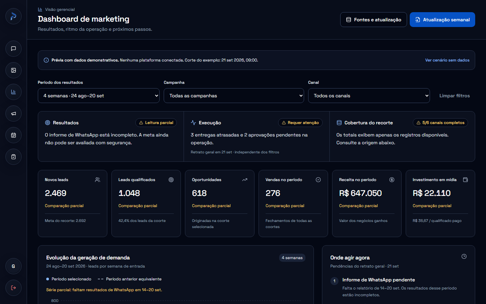
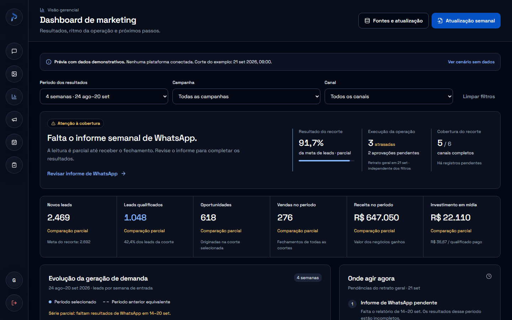
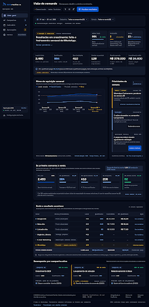

Dashboard de marketing
Captura da primeira composição. Sua base funcional evoluiu para a versão C; o código original foi preservado como referência.

A versão C reúne a funcionalidade de A, a hierarquia de B e novos gráficos. A e B ficam abaixo como referências do processo; os valores continuam demonstrativos.

Captura da primeira composição. Sua base funcional evoluiu para a versão C; o código original foi preservado como referência.

Outra composição: diagnóstico executivo em destaque, faixa de indicadores, prioridades e funil. Novas formas de organizar os dados com a identidade Prometeus.
